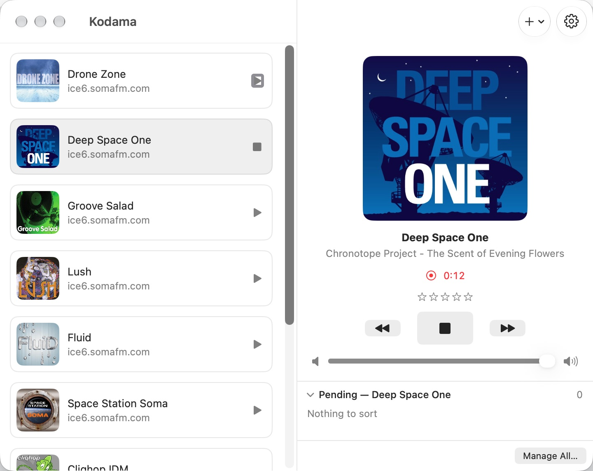
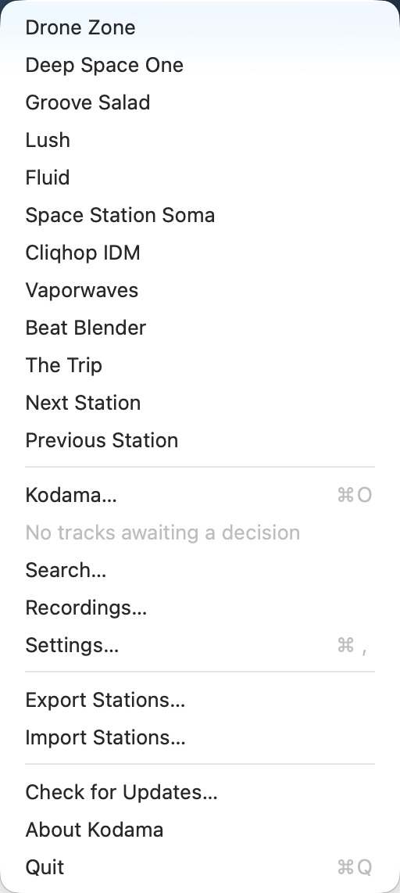
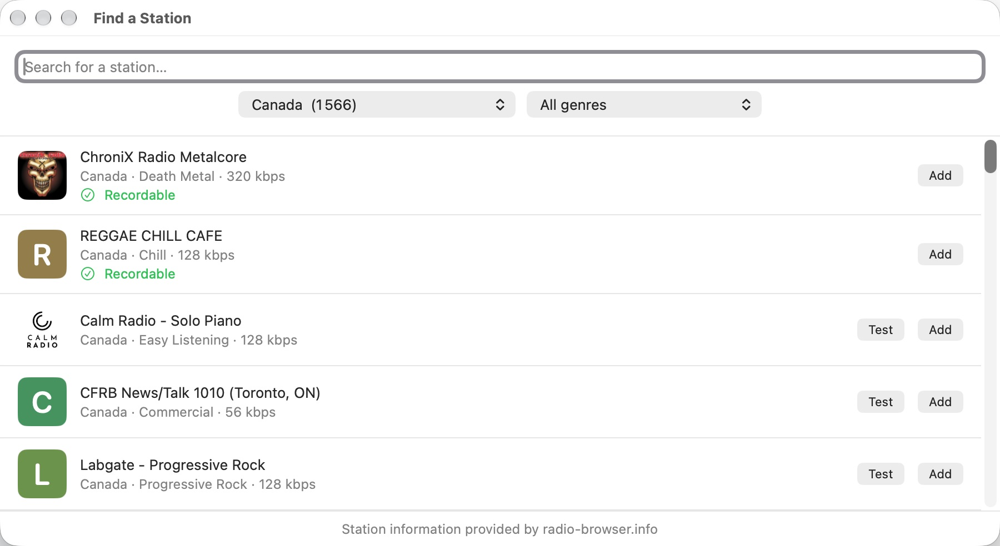
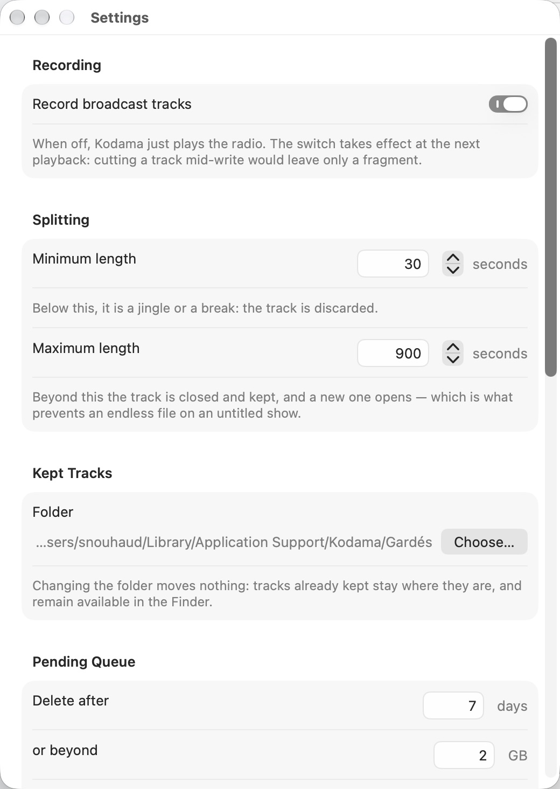
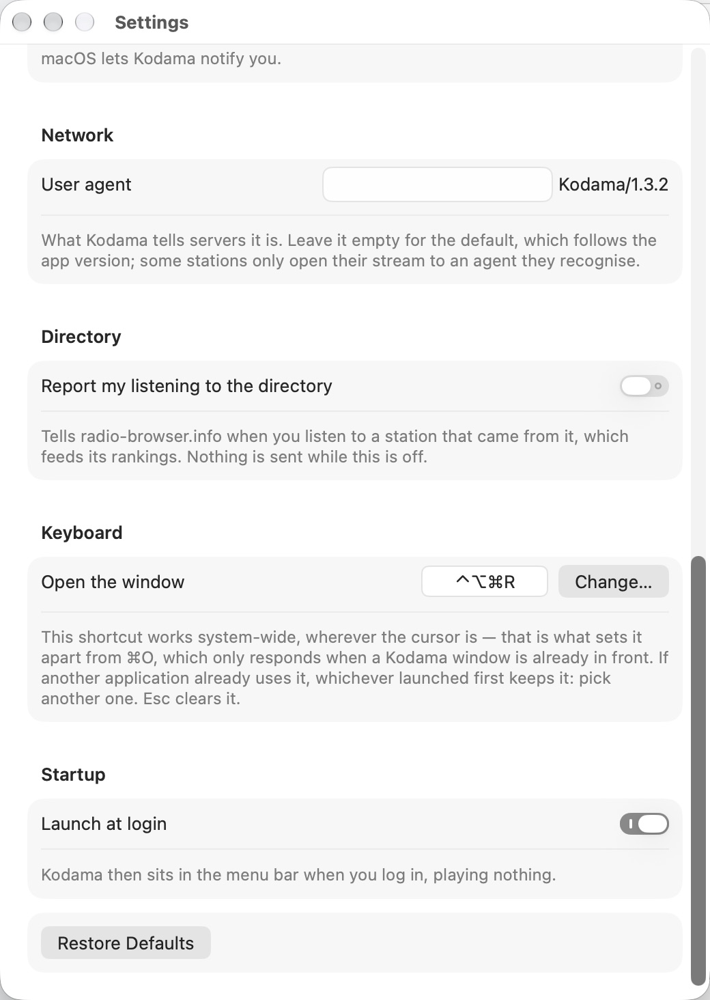

A web radio streaming application for the macOS menu bar. It plays your stations,
records the tracks they broadcast, and lets you choose which ones to keep.
macOS 14 or later · Apple silicon and Intel · 5.0 MB
Signed and notarised by Apple
In the menu bar
What's playing, the list of stations, one click to listen. The keyboard's
media keys change station.
Split into tracks
The title arrives in the stream at the very point where the track begins.
The cut lands on a frame boundary — no offset to correct.
Keep the tracks you choose
Every recorded track is offered to you by a notification. Keep, or discard.
Nothing piles up without your say-so.
What happens while it plays

Stations on the left, the player on the right — artwork, title, recording timer and rating.
The stream is read once, and the bytes received go to disk exactly as they came: no
re-encoding, so the station's exact quality. Files carry artwork — the one the station
announces, or the image you gave the radio.
Tracks are rated from one to five stars, while playing or afterwards. The rating goes
into the file itself.
Any radio can be excluded from recording, from its own sheet — useful for those that
announce a title without ever changing it, which no detection can catch out.
Everything is driven from the menu bar

Kodama does not occupy the Dock. It waits in the menu bar.
One key, and there it is
⌃⌥⌘R opens Kodama's window wherever you are — the shortcut is
system-wide, and can be changed in Settings. A right-click on the icon
gets you there too, without going through the menu.
It is waiting when you wake up
Kodama can launch at login and settle into the menu bar, silent, ready. It is a
setting, not an imposition: it plays nothing until you ask it to.
Fifty-eight thousand others

Canadian stations. Two have already answered the test: they broadcast their titles.
Kodama searches radio-browser.info, the
public directory of web radios: by name, by country, by genre. What Kodama adds is the
question that concerns it — does this station broadcast its titles?
The directory does not say; a button on each result asks the station itself, and
answers before you adopt it.
Streams Kodama cannot read do not appear: promising playback that would fail does
nobody any good.
Ten stations to start with
Kodama arrives with ten radios chosen for background listening — ambient, chillout,
electro, downtempo — all from SomaFM, independent and
ad-free.
They share something that has nothing to do with taste: they all broadcast
their titles. A radio that announces nothing is perfectly listenable, but
cannot be recorded — and that only shows in use. You can of course add your own.
What you can set


Below the minimum duration, it is a jingle: the track is discarded.
The splitting thresholds, the folder kept tracks go to, how long the pending list is
held, the notifications. Kodama can also just play the radio, recording nothing.
Your files are yours
The folder is the database: no index beside it, metadata lives in the files'
own tags, and everything can be handled in the Finder. No account is asked for.
Nothing leaves your machine, with two exceptions, both visible: the searches you run in
the directory, and — only if you turn it on in Settings — reporting
what you listen to back to radio-browser.info, which feeds its ranking. That setting is
off by default.
What Kodama does not do. Radios that do not announce their titles
can be listened to but not recorded. HLS streams are not supported: MP3 and AAC
only. No Chromecast — AirPlay takes its place.
Reports go on GitHub. Two forms guide you: one for what does not work, one for what is
missing. A few questions are asked — version, station concerned — because they nearly
always save a round trip.